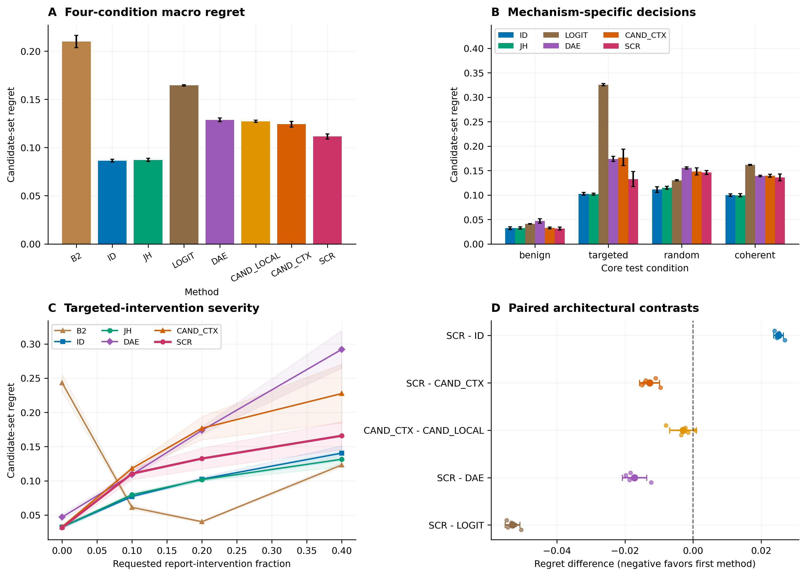
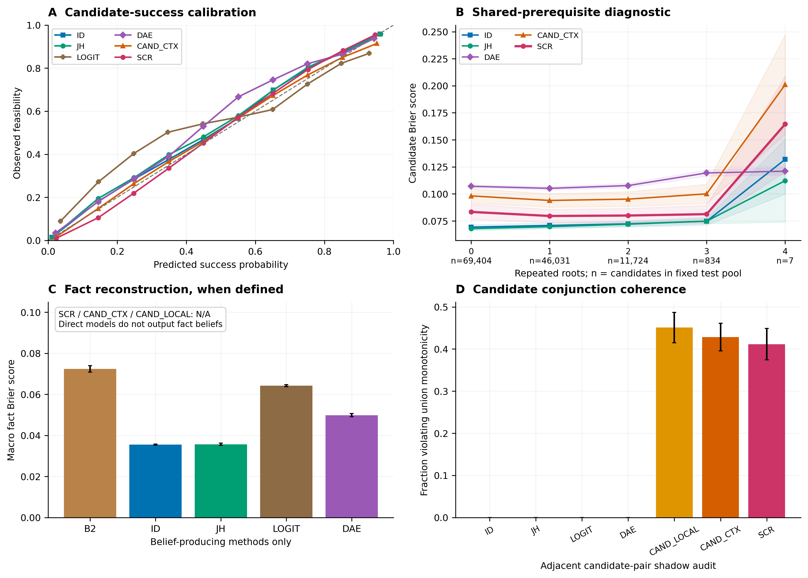
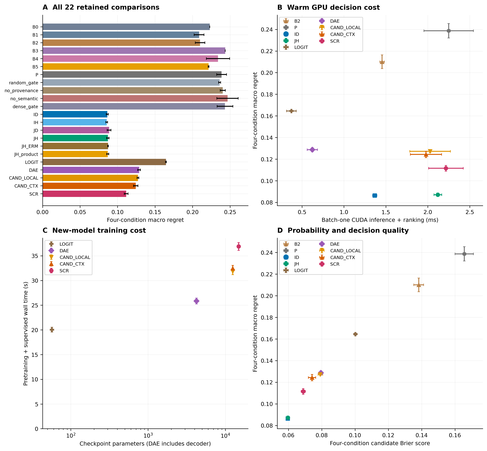
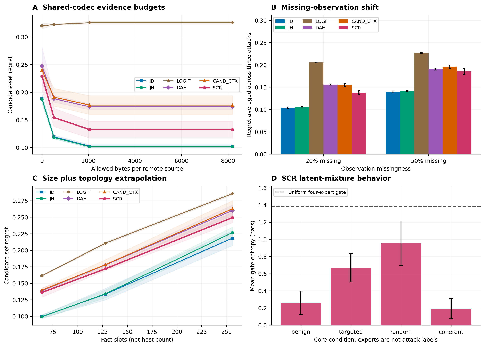
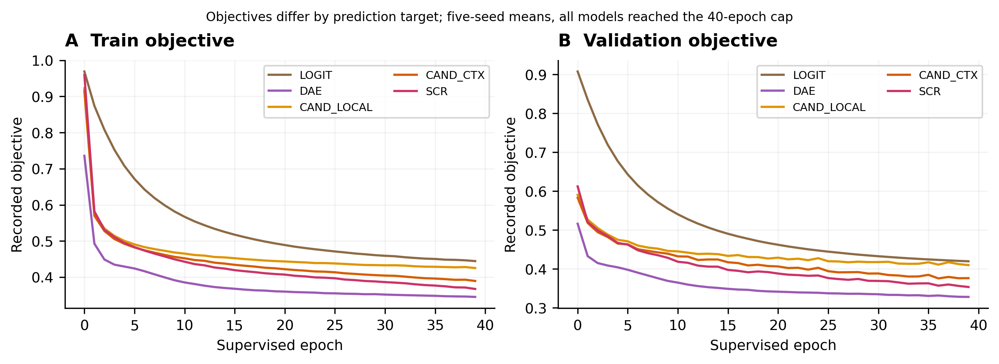
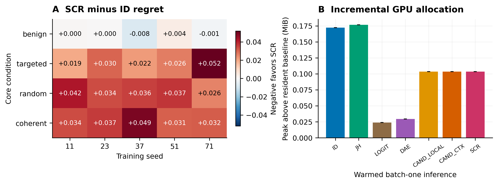

Four empirical figures and two additional supplemental figures from the complete CUDA study. Error bars are 95% training-seed t intervals conditional on the shared test pool; the primary crossed seed/topology bootstrap is reported separately.
Three-page supplement · Results and limits · Preserved second study

Fresh test seed 62027, five training seeds, four equally weighted core conditions. The primary comparison is SCR versus ID; context and mixture contrasts are descriptive. Old models are reevaluated from frozen checkpoints.
Vector PDF · Provenance
Panels A/B use targeted 20% interventions; C/D are four-condition macro averages. Candidate calibration and Brier scores are comparable across all methods. The final repeated-root bin has only seven candidates and is a fragile descriptive diagnostic. Dependency bins report candidates in the one fixed test pool; reused candidates across training seeds are not independent samples. Direct candidate methods have no fact posterior. The shadow-union audit tests whether a union of adjacent prerequisite sets is assigned more success probability than either constituent; this is a limited diagnostic, not a proof of full logical coherence.
Vector PDF · Provenance
All 22 methods remain visible. CUDA timing includes warmed inference and candidate ranking but excludes host I/O. Training cost and parameter counts compare only newly trained methods; DAE checkpoint parameters include its pretraining decoder. Comparing candidate learners with fact learners also changes the prediction target and training loss.
Vector PDF · Provenance
Every method uses the same sparse symbolic report codec. Larger fact sets also change root density. SCR gate entropy is averaged over snapshots and training seeds; it is invariant to expert label permutations. Latent experts are not identified deception classes. No wire-codec compression gain is tested.
Vector PDF · Provenance
Vector PDF · Provenance
Vector PDF · ProvenanceSCR | Shared-context ranking |
CAND_CTX | Context candidate |
CAND_LOCAL | Local candidate |
LOGIT | Fact logistic |
DAE | Denoising autoencoder |
JH | Joint HDC |
JD | Joint dense |
IH | Independent HDC |
ID | Independent dense |
JH_ERM | Joint HDC, mean risk |
JH_product | JH marginal product |
B0 | Constrained prior |
B1 | Old GraphMAE |
B2 | Old dense full |
B3 | HDC cleanup |
B4 | Old P, full |
B5 | Old entropy gate |
P | Old learned gate |
random_gate | Old random gate |
no_provenance | Old source ablation |
no_semantic | Old semantic ablation |
dense_gate | Old dense gate |